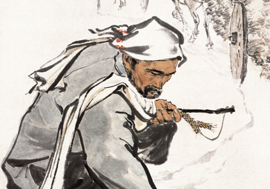

粒粒皆辛苦

方增先于1955年创作的《粒粒皆辛苦》 描绘了一位老农停下满载麦子的驴车，返回俯身， 捡起几穗散落麦子的情景。 作者用功力深厚的笔墨和精准传神的造型刻画出一位头裹白巾、 满脸胡须、身着粗布衫、脚穿草鞋的典型北方农民形象。 他蹲下身子，伸长臂膀，用沧桑的手，全神贯注地去捡散落在地上的 几粒麦穗。画面中，深深的车辙、满载的麦子所显示出来的粮食大丰 收与老农对遗落麦穗的珍惜形成了鲜明对比，突出了“粒粒皆辛苦”的 深刻内涵。“捡麦穗”表现的是庄稼人对粮食的情感，“粒粒皆辛苦”则 表达了作者对劳动者的尊重之情。这幅作品宣扬了劳动者吃苦耐劳的 精神，歌颂了中华民族的节俭美德。